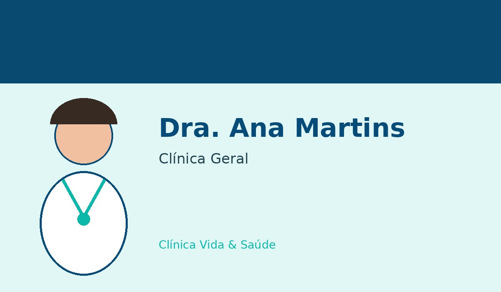
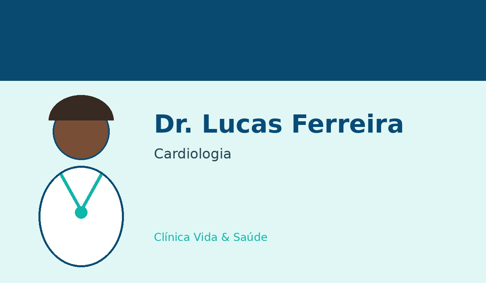
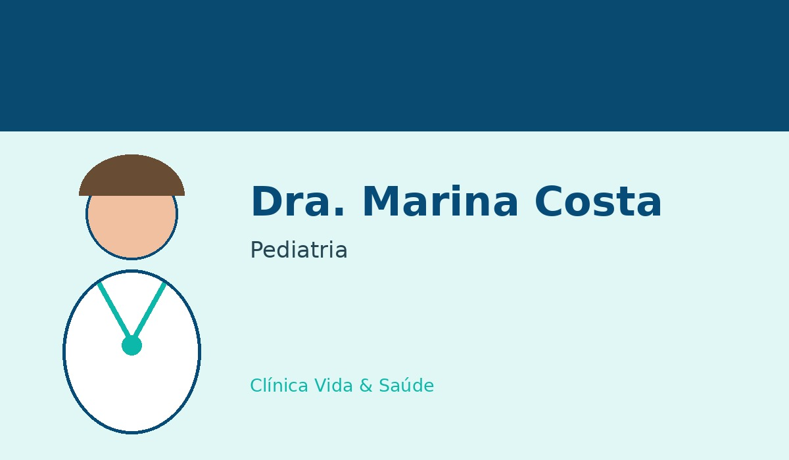

Dra. Ana Martins

Clínica Geral
Profissional voltada ao cuidado integral do paciente, avaliação inicial e acompanhamento preventivo.
Cuidando de você em todas as fases da vida.
Nossa equipe fictícia foi criada para representar diferentes áreas de atendimento da clínica.

Profissional voltada ao cuidado integral do paciente, avaliação inicial e acompanhamento preventivo.

Profissional dedicado à avaliação da saúde cardiovascular e ao acompanhamento de pacientes cardiológicos.

Profissional dedicada à saúde de crianças e adolescentes, acompanhando crescimento e desenvolvimento.